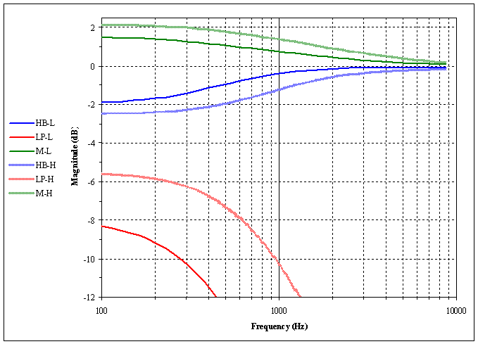
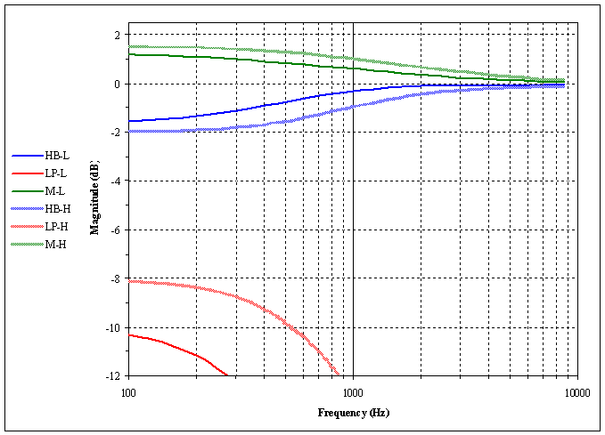
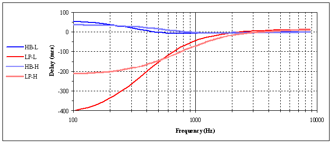
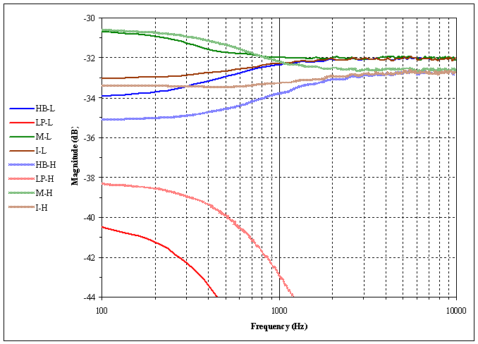
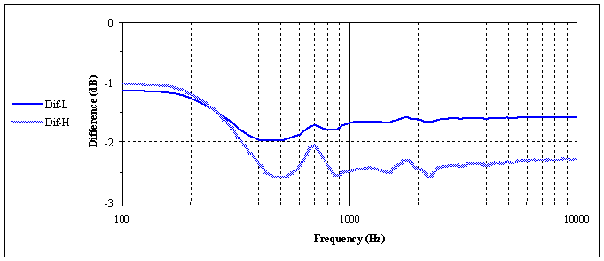
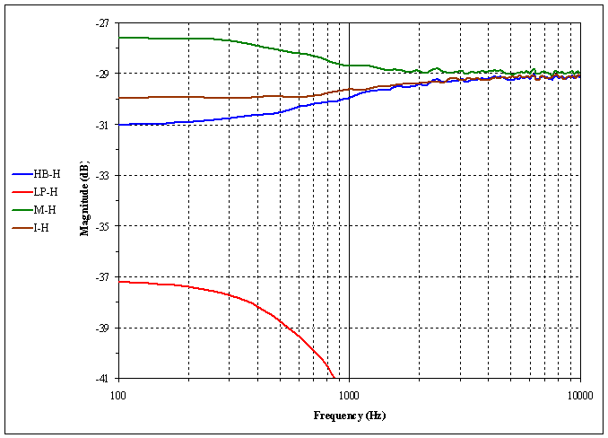
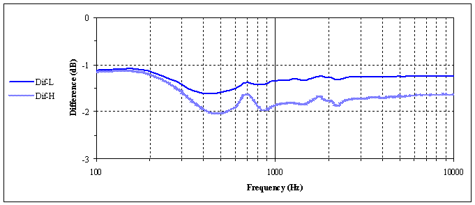

| Bauer stereophonic-to-binaural DSP. 1. Предисловие. Обычная стерео запись производится для прослушивания громкоговорителями. Это означает, что звукорежиссер делает стерео микширование с адаптацией звука для прослушивания одного канала обеими ушами. Следовательно, вы будете утомлены при длительном прослушивании в наушниках больше из-за суперстерео эффекта чем из-за плохой конструкции наушников. В наушниках отсутствует то, что звук идет от каждого канала к противоположному уху, достигает его через некоторое короткое время проходя дополнительное расстояние, и с частично ослабленными верхними частотами из-зи эффекта тени головы. И задержка до дальнего уха несколько больше на низких частотах чем на высоких. Bauer stereophonic-to-binaural DSP (bs2b) предназначен для улучшения прослушивания аудио стерео программ в наушниках. Это улучшение хорошо было объяснено дизайнерами электронных схем такими как Benjamin Bauer [1], Siegfried Linkwitz [2], Chu Moy [3], Jan Meier [4], John Conover [10], HeadRoom [9]. Задержка в низкочастотном диапазоне, фильтры высокой частоты (ФВЧ), фильтры ослабления низкой частоты (ФОНЧ), и взаимосмешение в их электронных схемах сделаны на аналоговых RL (Bauer) или RC (Linkwitz, Moy, Meier) фильтрах перврго порядка. Такой дизайн производит желаемые эффекты и естественно исключает эффект гребенчатого фильтра в верхнем диапазоне частот благодаря нелинейному свойству фазово-частотной характеристики (ФЧХ) этих фильтров. bs2b делает такую же работу посредством простых и быстрых (в сревнение со сверткой) однополярных рекурсивных цифровых фильтров, потому что эти фильтры имеют такие же свойства как электронный RC-фильтры [5], [6], [7]. Я выбрал такие значения частот среза для ФВЧ и ФОНЧ которые позволяют получать желательные задержку и наиболее ровную результирующую амплитудно-частотную характеристику (АЧХ). К сожалению, я не вычислил реальное значение частоты среза ФОНЧ, но это не так важно. ФОНЧ цифровой фильтр может быть представлен как двойной фильтр: как вычитание ослабленного профильтрованного ФВЧ сигнала из оригинального сигнала. Это может быть математически приведено к одношаговому рекурсивному фильтру. В первом релизе (1.0.0) bs2b я применял двушаговый метод для ФОНЧ с использованием уже полученного ФВЧ сигнала, но это делает значение частоты среза ФОНЧ немного меньше чем я предполагал, и это ведет к выделению низко-средних частот. Тем не менее, как написал Chu Moy [3], значение частоты среза ФОНЧ должно быть немного больше чем это значение для ФВЧ для достижения более гладкой АЧХ кросфидера. Поэтому, я сделал одношаговый метод для ФОНЧ во втором релизе bs2b. Я начал этот проект потому что звук других, которые я слушал до этого, наушниковых плагинов для аудиоплееров не удовлетворил меня. Основновное ухудшение звука наушниковыми DSP производится эффектом гребенчатого фильтра из-за использования FFT свертки с линейной ФЧХ для фильтрации. Есть плагин HeadPlug который имеет опцию 'decomb', и автор пишет об этом: "The way the plugin does this is really damn-ass straight-forward from a technical point of view". Я попытался сделать это намного легче для CPU. Последнее замечание. bs2b не производит симуляцию какого либо окружения и не производит какую либо HRTF [8] трансформацию в высокочастотном диапазоне. Некоторое применение HRTF в высокочастотном диапазоне уже сделано наушниками, исключая бинауральные наушники такие как Etymotic ER-4B. Итак, пробуйте использовать bs2b чтобы почуствовать звук немного вне вашей головы для облегчения работы вашего мозга. 2. Теория. Однополюсный рекурсивный фильтр представляется рекурсивным выражением: O[n] = a0 * I[n] + a1 * I[n-1] + b1 * O[n-1] где a0, a1, b1 - рекурсионные коэффициенты, I[n] - входящие значения сэмплов, O[n] - результирующие (фильтрованные) значения сэмплов. Характеристики фильтров зависят от рекурсионных коэффициентов. Таблица 2.1 показывает perl программу которая вычисляет частотную и временную зависимости bs2b с помощью H-преобразования [5]. Table 2.1. bs2b-H-transform.pl.
Рисунки 2.1 и 2.2 показывают результаты выше указанной программы. Другими словами, это тереотические зависимости bs2b DSP. Показаны только установки bs2b низкого (low) уровня взаимосмешения '-L' и высокого (high) уровня взаимосмешения '-H'. Средняя установка (middle) уровня взаимосмешения опущена для наглядности. 'HB' означает ФОНЧ (highboost filter). 'LP' означает ФВЧ (lowpass filter). 'M' означает сумму этих отфильтрованных сигналов, которая может быть интерпретирована как bs2b действие на двухканальный моно сигнал. Рисунок 2.1. bs2b теоретическая частотная характеристика.  На рисунке 2.2 отрицательное время представляет задержку сигнала в микросекундах. Рисунок 2.2. bs2b теоретическая временная характеристика. Эти характеристики выглядят так как если бы виртуальные стерео громкоговорители переместились от 30 градусов (high crossfeed level) до 60 градусов (low crossfeed level) по азимуту. Рисунки 2.3 и 2.4 показывают результаты выше указанной программы для новых 'Easy' уровней взаимосмешения выпуска 2.1 bs2b. Показаны только установки low-easy уровня смешения '-L' и high-easy уровня смешения '-H'. Рисунок 2.3. bs2b теоретическая частотная характеристика. 'Easy' версия.  High-easy установка схожа с Chu Moy [3] версией кроссфидера. Рисунок 2.4 представляет характеристику временной задержки 'Easy' версии. Рисунок 2.4. bs2b теоретическая временная характеристика. 'Easy' версия.  Эти характеристики выглядят похожими на 'нелегкую' версию из-за одинакового набора частот среза для ФВЧ и малого различия в наборе частот среза для ФОНЧ для обеих версий. 3. Эксперимент. Рисунок 3.1 показывает практические частотные характеристики bs2b. Это частотный анализ пропущенного через bs2b сигнала белого шума. Три вида белого шума: двухканальный моно сигнал 'M', двухканальный независимый сигнал 'I' и одноканальный сигнал. Обработка посредством bs2b одноканального сигнала представляется как характеристика ФОНЧ 'HB' или канал с первичным сигналом и как характеристика ФВЧ 'LP' или канал без первичного сигналаl. Показаны только установки bs2b низкого уровня '-L' и высокого уровня '-H' смешивания. Установка среднего уровня смешивания опущена для наглядности. Рисунок 3.1. bs2b частотная характеристика.  Рисунок 3.2 показывает разницу между частотным анализом реальной аудио программы и частотным анализом этой программы обработанной bs2b. Рисунок 3.2. J.S. Bach "BWV1066" "Overture" разница частотного анализа.  Рисунок 3.3 показывает практические частотные характеристики bs2b c установкой 'Easy High'. Рисунок 3.3. bs2b частотная характеристика. 'Easy' версия.  Рисунок 3.4 как рисунок 3.2 но для 'Easy High' ('-H') и 'Easy Low' ('-L') установок. Рисунок 3.4. J.S. Bach "BWV1066" "Overture" разница частотного анализа. 'Easy' версия.  4. Ссылки. [1] Benjamin B. Bauer. Stereophonic Earphones and Binaural Loudspeakers. JAES Volume 9
Number 2 pp. 148-151; April 1961. http://www.aes.org/
[2] Siegfried Linkwitz. Improved Headphone Listening. Build a stereo-crossfeed circuit. Audio; December 1971. http://www.linkwitzlab.com/
[3] Chu Moy. An Acoustic Simulator for Headphone Amplifiers. (C) 1998-2001 Chu Moy. http://headwize.com/projects/showfile.php?file=cmoy1_prj.htm
[4] Jan Meier. A DIY Headphone Amplifier. [5] Steven W. Smith, Ph.D. The Scientist and Engineer's Guide to Digital Signal Processing. California Technical
Publishing; ISBN 0-9660176-3-3 (1997). http://www.dspguide.com/
[6] Davide Rocchesso. Introduction to Sound Processing. (C) 2003 Davide Rocchesso, GNU
FDL. http://profs.sci.univr.it/~rocchess
[7] BORES Signal Processing: Introduction to DSP. (C) 2004 Bores Signal Processing.
http://www.bores.com/courses/intro/index.htm
[8] Richard O.Duda. 3-D Audio for HCI. (C)
1996-2000 Richard O.Duda. http://interface.cipic.ucdavis.edu/
[9] HeadRoom. About the HeadRoom Crossfeed. (C) 1995-2006 HeadRoom. http://www.headphone.com/products/faqs/about-headroom-crossfeed/
[10] John Conover. Spatial Distortion Reduction Headphone Amplifier. (C) 1992-2005 John Conover. http://www.johncon.com/john/SSheadphoneAmp/index.html
Авторское право (c) 2006 Борис Михайлов < http://www.tmn.ru/~bor> |